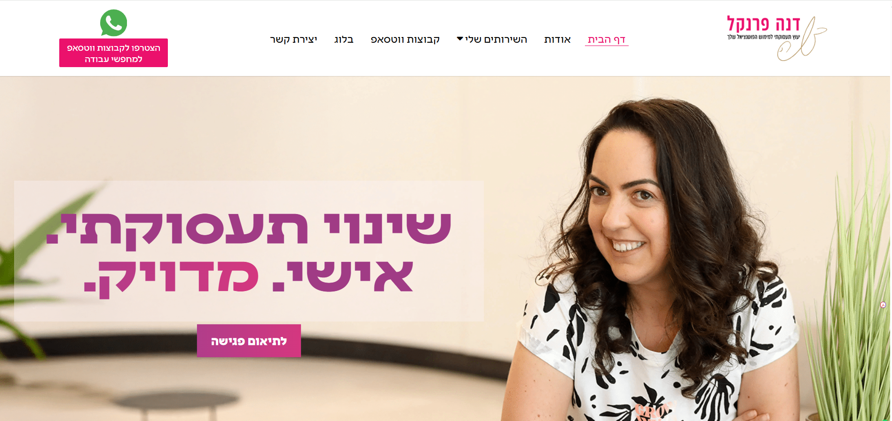
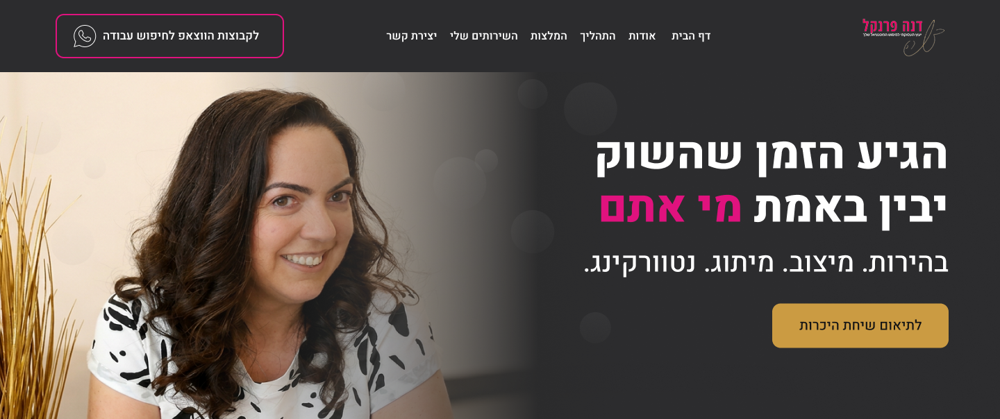

רקע
דנה פרנקל היא יועצת קריירה ומאמנת תעסוקתית בעלת 15 שנות ניסיון. האתר הקיים שלה פונה לקהל רחב של מחפשי עבודה. הפרויקט הנוכחי מטרתו לבחון עיצוב חלופי לדף הבית שפונה לפרופיל לקוח שונה: מנהלים, בכירים ואנשי מקצוע ותיקים.
מיצוב מחדש לקהל בכירים ומנהלים
דנה פרנקל היא יועצת קריירה ומאמנת תעסוקתית בעלת 15 שנות ניסיון. האתר הקיים שלה פונה לקהל רחב של מחפשי עבודה. הפרויקט הנוכחי מטרתו לבחון עיצוב חלופי לדף הבית שפונה לפרופיל לקוח שונה: מנהלים, בכירים ואנשי מקצוע ותיקים.
01
האתר הקיים בנוי היטב לקהל של מחפשי עבודה כלליים, אך אינו מדבר בשפה של בכירים ומנהלים. האתגר היה לשמור על זהות המותג של דנה תוך התאמת הנרטיב, העיצוב והמבנה לקהל יעד שמצפה לרמה אחרת של מקצועיות ואסטרטגיה.
02
| קהל חדש — בכירים ומנהלים | קהל קיים — מחפשי עבודה | היבט |
|---|---|---|
| מנהלים, בכירים, C-level, דירקטורים | כל מי שמחפש עבודה — כולל שינוי קריירה | פרופיל |
| לא מצליחים לפרוץ למרות הניסיון | שולחים קו"ח ולא מקבלים תגובות | כאב מרכזי |
| אסטרטגיה, מיצוב ובהירות עסקית | כלים פרקטיים ותמיכה קהילתית | ציפייה מהמוצר |
| מקצועי, אוטוריטטיבי, ממוקד תוצאה | חם, מעודד, קהילתי | טון מתאים |
| שיחת היכרות אישית High-touch | סדנה חינמית / הרשמה למייל | CTA מועדף |
03
danafrenkel.co.il — דף הבית הנוכחי

הכותרת הראשית היא "שינוי תעסוקתי. אישי. מדויק." — פניה רגשית ורחבה המתאימה לכל אחד. מיד מתחת מופיע טופס הרשמה לסדנה חינמית, שהוא מוביל מגנטי קלאסי לקהל המוני.
04
Figma website

הכותרת החדשה היא "הגיע הזמן שהשוק יבין באמת מי אתם" — פניה אמפאורמנט לבכיר שמרגיש שהשוק לא רואה את ערכו. ה-CTA הראשי: "לתיאום שיחת היכרות" — אינטראקציה אישית ואיכותית.
עיצוב כהה יוקרתי מרגיש Premium
CTA איכותי שיחת היכרות מתאים לחוויה של הלקוח הבכיר
מיצוב ברור ומובחן — מדבר ישירות לבכיר
תהליך שלב אחר שלב מוריד חרדה ומגביר אמון
נתונים כמותיים מחזקים אמינות
05
| עיצוב חדש | עיצוב קיים | אלמנט |
|---|---|---|
| הגיע הזמן שהשוק יבין באמת מי אתם | שינוי תעסוקתי. אישי. מדויק. | כותרת Hero |
| לתיאום שיחת היכרות | הרשמה לסדנה חינמית | CTA ראשי |
| כהה, זהב, ורוד סגנון יוקרתי | בהיר, סגול, חם | פלטת צבעים |
| ממוקד — 6 ערכים ממוקדים | רחב — 8 ערכים כולל בלוג | ניווט |
| חוסר בהירות, מיתוג, נטוורקינג | שולחים קו"ח ולא מקבלים תגובות | כאב מרכזי |
| סטטיסטיקות + המלצה של בכירה | המלצות אישיות ורגשיות | הוכחה חברתית |
| שלושה שלבים ברורים ומובנים | אין רשימת שירותים | תהליך |
| 3 שירותים פרימיום ממוקדים | 6 שירותים רחבים | שירותים |
| מנהלים, בכירים, C-level | כלל מחפשי העבודה | קהל יעד |
| ממוקד, ברור, מוביל לפעולה | ארוך, תוכן עשיר | אורך הדף |
06
CTA שיחת היכרות במקום סדנה חינמית
לבכיר, "חינמי" מרגיש זול ולא מותאם. שיחת היכרות אישית מעבירה שירות High-touch, אינדיבידואלי ואיכותי בדיוק מה שמצדיק השקעה.
צבעוניות כהה וזהב
הבכיר רגיל לאסתטיקה של מותגי פרימיום. צבעים כהים עם אקצנט זהב מעבירים יוקרה, רצינות ואוטוריטה בדיוק מה שהלקוח הבכיר מצפה לראות מיועצת קריירה שהוא ישלם עליה כסף רציני.
תהליך שלב אחר שלב
הבכיר רגיל לחשיבה תהליכית ואסטרטגית. מבנה ברור של שלושה שלבים — אבחון → אסטרטגיה → יציאה לשוק — מוריד חרדה ומגביר אמון.
נתונים כמותיים במקום המלצות אישיות
152+ בכירים, 15 שנים, 98% הצלחה — הבכיר מושפע מנתונים ומהוכחות מספריות. זה מדבר אליו יותר מסיפור אישי רגשי.
ניווט ממוקד
הסרת הבלוג, קבוצות הוואטסאפ ואלמנטים קהילתיים מהניווט הראשי מחזקת את הפוקוס על הסמכות המקצועית ומונעת התפזרות.
07
שני העיצובים נבנו לאותה זהות מקצועית — דנה פרנקל כמאמנת קריירה ויעוץ תעסוקתי, ההבדל הוא במי מדברים.
העיצוב הקיים ממשיך לשרת היטב את קהל מחפשי העבודה הרחב — כזה שזקוק לחום, לקהילה ולכלים מעשיים על מנת להשיג את המטרה.
העיצוב החדש, המבוסס על צבעי שחור, זהב ופוקסיה, משדר תחושה של מותג פרמיום נקי, בשל ומסודר. הוא פונה לבכיר שצריך אסטרטגיה, מיצוב ומישהו שמדבר בגובה העיניים שלו.
ההחלטה העסקית שדנה מעדיפה היא לגדול בערך ולפנות ללקוחות בכירים.
08